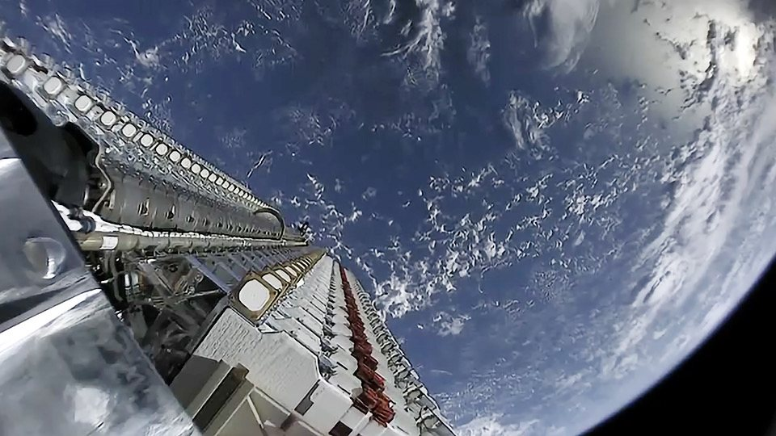

Nella notte fra martedì 13 e mercoledì 14 ottobre 2026 i terminali satellitari che le forze armate ucraine usano per guidare droni e intercettori hanno cominciato a perdere il collegamento non appena superavano una certa velocità. Il tetto indicato da Kiev è di circa 160 km/h, cioè 100 miglia orarie, ma alcuni reparti hanno registrato cadute di segnale anche molto più in basso. Nel giro di ventiquattr'ore la questione è diventata politica: l'Ucraina ha denunciato di non essere stata avvisata, il ministro degli Esteri polacco ha attaccato Elon Musk su X e Musk ha risposto che sul sistema militare Starshield le regole le fissa il governo degli Stati Uniti, «e in ultima istanza il presidente».
Che cosa è successo nella notte
Il primo allarme arriva dal fronte. Il 7° Corpo di reazione rapida delle truppe d'assalto aereo ucraine segnala che i collegamenti satellitari dei droni cadono per dieci o venti secondi a velocità comprese fra circa 110 e 120 km/h, ben sotto la soglia che verrà poi indicata ufficialmente. Per un drone pilotato a distanza, dieci secondi senza segnale bastano a perdere il bersaglio o il velivolo stesso. Il volontario Serhiy Sternenko, citando rapporti dei reparti, parla di interruzioni che partono addirittura fra 60 e 70 km/h.
Mercoledì 14 ottobre Serhiy Beskrestnov, consigliere del presidente Zelensky per le tecnologie della difesa e noto con il nome di battaglia «Flash», scrive su Telegram che sui terminali in movimento è stato introdotto un limite di velocità, valido anche per Starshield. «Le nostre forze di difesa non hanno ricevuto alcun avviso di questa limitazione, e questo ha portato all'interruzione di diverse missioni», è la sua frase più citata. I terminali civili, fermi o usati normalmente, non risultano toccati: il problema riguarda le piattaforme senza pilota che si muovono veloci.
Il colpo è doppio. I droni d'attacco a lungo raggio, quelli che negli ultimi mesi hanno colpito anche raffinerie russe, perdono affidabilità. Ma soprattutto ne risentono gli intercettori, i piccoli droni veloci che Kiev lancia contro gli Shahed russi e che Beskrestnov definisce la soluzione più efficace contro quella minaccia. Un intercettore deve raggiungere e superare in velocità un bersaglio che vola già oltre i 150 km/h: con un tetto a 160 il margine sparisce.
Starlink e Starshield non sono la stessa cosa
Per capire la risposta di Musk bisogna separare le due reti. Starlink è il servizio commerciale di SpaceX: lo stesso abbonamento che si compra per casa, per la barca o per un villaggio isolato. In Ucraina è arrivato nel febbraio 2022, pochi giorni dopo l'invasione russa, su richiesta dell'allora ministro per la Trasformazione digitale Mykhailo Fedorov. Da allora è diventato l'ossatura delle comunicazioni militari ucraine, dalla logistica ai reparti in prima linea.
Starshield è invece la versione governativa, presentata da SpaceX nel 2022 per osservazione della Terra, comunicazioni e carichi ospitati per conto delle agenzie statunitensi. Nel 2023 ha ottenuto un primo contratto della Space Force con un tetto di 70 milioni di dollari. Nel dicembre 2024 il Pentagono ha spostato su Starshield una parte dei terminali usati dall'Ucraina, circa 3.000 unità in due contratti. È questo il punto chiave: quei collegamenti non passano più per un rapporto commerciale fra Kiev e SpaceX, ma per un servizio pagato e gestito dal governo americano.
La risposta di Musk
Mercoledì sera Fedorov, oggi ex ministro della Difesa, scrive su X che il collegamento Starlink fino a 160 km/h sta tornando, ringrazia Musk e aggiunge che «togliere completamente il limite di velocità di Starshield è ora fondamentale per la difesa dell'Ucraina». Alle 21 ora italiana Musk gli risponde con due frasi che riassumono la posizione di SpaceX meglio di qualsiasi comunicato.
La prima: «I sistemi Starshield sono di proprietà del governo degli Stati Uniti e sono controllati da esso. Qualsiasi limite di velocità o di utilizzo è deciso dalle forze armate USA e, in ultima istanza, dal presidente». La seconda: «Starlink è un servizio commerciale di proprietà di SpaceX e controllato da SpaceX. L'uso di Starlink è limitato ad attività civili o difensive e non può servire ad azioni militari offensive, perché sarebbe inappropriato per un'azienda commerciale».
Il messaggio va letto con attenzione. Musk descrive chi ha l'autorità su ciascuna rete; non dice che qualcuno abbia ordinato il limite, né chi. Né SpaceX né il governo americano hanno confermato da dove venga la soglia dei 160 km/h, e finora nessuno ha portato prove di una richiesta di Washington. Restano aperte anche spiegazioni tecniche o di policy sui terminali in rapido movimento. Il riferimento al presidente, però, è esplicito, e arriva in un momento in cui i rapporti fra la Casa Bianca e Kiev sono tesi.
Il contesto: raffinerie, gasolio e intelligence
Da giorni Washington preme perché l'Ucraina smetta di colpire le raffinerie russe. Il presidente Trump ha proposto una «tregua energetica» fra Mosca e Kiev e ha accusato gli attacchi ucraini di far salire il prezzo del gasolio, tema delicato a poche settimane dalle elezioni di metà mandato. Venerdì scorso Stati Uniti e Russia hanno concluso un'intesa sull'acquisto di gasolio russo, che la presidente del Consiglio Giorgia Meloni ha definito «una scelta molto rischiosa». Un alto funzionario di Kiev ha confermato che gli Stati Uniti hanno minacciato di interrompere la condivisione dei dati sui lanci di missili russi, e per due notti consecutive la capitale è stata colpita da missili balistici prima che suonassero le sirene.
Musk non è rimasto in disparte. Sabato 10 ottobre, sotto un video in cui Trump attacca Zelensky per i raid sul gasolio, ha scritto «Zelensky has gone too far», Zelensky ha passato il limite. Nella notte fra il 14 e il 15 ottobre, rilanciando un post critico verso il presidente ucraino, ha aggiunto: «E così il massacro continua… È ora che Zelensky se ne vada». Sono queste prese di posizione, insieme alla tempistica, a spingere i funzionari ucraini a sospettare che il limite sia intenzionale.
La reazione più dura arriva da Varsavia. Il ministro degli Esteri Radosław Sikorski, citando un articolo del Kyiv Independent, scrive a Musk: «Ehi, grand'uomo, stai di nuovo facendo politica con i tuoi prodotti? Come tuoi clienti europei, ti stiamo osservando». Il tono richiama lo scontro del 2025, quando Musk gli aveva risposto «stai zitto, piccolo uomo». La Polonia non è un interlocutore qualsiasi: ha fornito all'Ucraina oltre 29.000 terminali Starlink e ne copre i costi operativi, che Sikorski ha stimato in circa 50 milioni di dollari all'anno.

Una storia che si ripete
Non è la prima volta che il ruolo di SpaceX in Ucraina diventa un caso. Nell'ottobre 2022 l'azienda chiese al Pentagono di farsi carico del servizio, con Musk che stimava i costi vicini a 20 milioni di dollari al mese, salvo poi tornare sui suoi passi e annunciare che SpaceX avrebbe continuato a pagare. Nel 2025, dopo le accuse polacche, Musk assicurò che Starlink «non spegnerà mai i suoi terminali» e che non sarebbe mai stato usato come merce di scambio.
C'è anche un precedente di segno opposto. Nel febbraio 2026 SpaceX, in coordinamento con Kiev, ha disattivato i terminali ritenuti in uso alle truppe russe, una mossa che i comandanti ucraini hanno poi descritto come un colpo serio agli assalti nemici. Quella volta la rete era stata modificata d'accordo con l'Ucraina. Questa volta Kiev dice di averlo scoperto in battaglia.
A che punto siamo stamattina
La situazione è migliorata ma non è risolta. Nelle prime ore del 15 ottobre il ministero della Difesa ucraino, tramite l'agenzia militare ArmyInform, conferma di essere «in comunicazione attiva» con SpaceX per togliere le restrizioni. Una fonte interna al ministero spiega che SpaceX mantiene un limite di circa 161 km/h sul pacchetto militare per i sistemi senza pilota, che durante la giornata di mercoledì i limiti effettivi erano «significativamente più bassi» e che ora la qualità del collegamento fino a 160 km/h è migliorata. La priorità di Kiev adesso è ottenere condizioni di servizio stabili, che impediscano nuove limitazioni improvvise e non annunciate.
Intanto l'Ucraina guarda alle alternative. L'azienda Stetman sta sviluppando un proprio sistema satellitare, UASAT-NANO, e in Europa si discute di reti di riserva dall'inizio del 2025. Nessuna, per ora, si avvicina alla scala della costellazione di SpaceX, che resta l'unica in grado di coprire un fronte di oltre mille chilometri con migliaia di terminali.
Che cosa seguire adesso
I segnali da tenere d'occhio sono tre. Il primo è se il tetto dei 160 km/h verrà tolto del tutto, come chiede Fedorov, e chi lo annuncerà: SpaceX, il Pentagono o la Casa Bianca. Il secondo è se arriverà una spiegazione ufficiale sull'origine del limite, che finora nessuno ha dato. Il terzo è la tenuta del rapporto fra Washington e Kiev sulla tregua energetica, perché da quel tavolo dipendono anche intelligence e comunicazioni. Per SpaceX la vicenda mostra quanto la distinzione fra rete commerciale e rete governativa, nata come scelta contrattuale, sia diventata una questione di politica estera.
Il dossier sulla revisione FAA dei 456 lanci Starship all'anno da Starbase passa all'archivio Notizie.
Fonti pubbliche e tracce
Ultimo aggiornamento editoriale: 15 ottobre 2026. Nel corpo non si ripete la fonte a ogni frase: le tracce sono raccolte qui. Le velocità a cui cadono i collegamenti vengono da fonti militari ucraine e non sono state verificate in modo indipendente.
- Elon Musk su X, 14 ottobre 2026: risposta a Fedorov su Starshield e Starlink (citata nel testo, traduzione redazionale).
- Mykhailo Fedorov su X, 14 ottobre 2026: collegamento fino a 160 km/h in ripristino, richiesta di togliere il limite.
- Elon Musk su X, 10 ottobre 2026: «Zelensky has gone too far».
- Elon Musk su X, 15 ottobre 2026: «Time for Zelensky to go».
- ArmyInform su X, 15 ottobre 2026: ministero della Difesa ucraino, limite di circa 161 km/h ancora attivo, dialogo con SpaceX.
- AP News, 14 ottobre 2026: droni ucraini rallentati dalle nuove restrizioni.
- Axios, 14 ottobre 2026: restrizioni su Starlink e Starshield, contesto politico.
- CNBC, 14 ottobre 2026: dichiarazioni di Beskrestnov, tregua energetica, minaccia sull'intelligence.
- Euronews, 15 ottobre 2026: risposta di Musk, attacchi su Kiev, commento di Meloni sull'intesa per il gasolio russo.
- Teslarati, 14 ottobre 2026: velocità segnalate dai reparti, post di Sikorski, precedenti 2022 e 2026, alternative ucraine.
- Teslarati, 15 ottobre 2026: storia di Starshield, contratto Space Force 2023, passaggio dei terminali ucraini nel dicembre 2024.
- PBS NewsHour, 14 ottobre 2026: effetti operativi sulla rete Starshield.
Fotografie utilizzabili
- Copertina e figure: Wikimedia Commons, licenze CC BY 4.0, CC0 e pubblico dominio USA; dettagli in
assets_starshield_ucraina/crediti_immagini.md. - Nessuna foto SpaceX o X a credito editoriale in questo dossier: le immagini libere di terminali Starlink e Starshield in uso militare e di un intercettore ucraino documentano direttamente il soggetto della notizia.